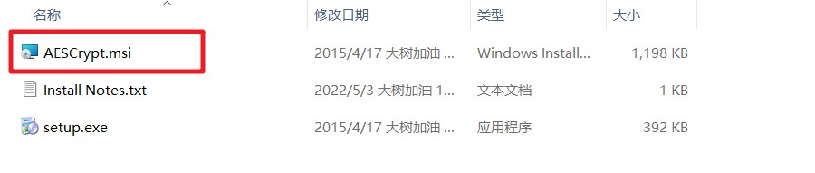

- 下载
- 访问 官网，选择右侧导航的下载download获取最新版本
- 在window的各项列表中，根据系统选择64bit或32bit的图形操作界面版本或控制台版本。这里选择64bit的图像操作界面版本AES Crypt - GUI (Windows 64-bit)；
- 或直接下载大树老师帮你们准备好的AESCrypt_v310_x64.zip
- 下载完毕后->解压，得到三个文件，如图1。双击AESCrypt.msi安装
- 安装完成后，加密和解密的快捷操作会自动添加到鼠标右键菜单中
- 加密
- 右键单击一个文件，选择加密，输入密码并确认密码，即可生成对应的密码文件
- 解密
- 右键一个加密过的文件，选择解密，即可对加密文件解密
- 说明
- 加密完记得删除明文文件哦
- 请牢记加密密钥
- 如果安装过程中，提示缺少文件，请使用setup.exe安装
- 理工科的学生，赶紧试一试吧！

AES Crypt 安装文件